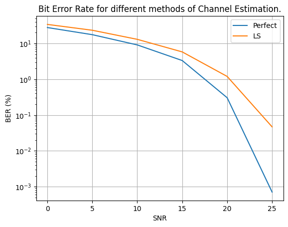

Calculating bit error rate of PDSCH communication
This notebook shows how to calculate the bit error rate of PDSCH communication when there is no channel coding.
[1]:
import numpy as np
import time
import matplotlib.pyplot as plt
from neoradium import Carrier, PDSCH, CdlChannel, AntennaPanel, Grid, random
from neoradium.utils import toLinear
[7]:
numFrames = 2 # Number of time-domain frames
snrDbs = [0,5,10,15,20,25] # SNR values (in dB) for which we want to evaluate the model
freqDomain = False # Set to True to apply channel in frequency domain
modulation = "16QAM" # Modulation Scheme
carrier = Carrier(numRbs=51, spacing=30) # Create a carrier with 51 RBs and 30KHz subcarrier spacing
bwp = carrier.curBwp # The only bandwidth part in the carrier
# Create a PDSCH object
pdsch = PDSCH(bwp, interleavingBundleSize=0, numLayers=2, nID=carrier.cellId, modulation=modulation)
pdsch.setDMRS(prgSize=0, configType=2, additionalPos=2) # Specify the DMRS configuration
numSlots = bwp.slotsPerFrame*numFrames # Total number of slots
results = {} # Dictionary to save the results
minMse, maxMse = 100, 0
for chanEstMethod in ["Perfect", "LS"]: # Three different channel estimation methods
results[chanEstMethod] = {}
print("\nSimulating end-to-end for \"%s\", with \"%s\" channel estimation, in %s domain."%
(modulation, chanEstMethod, "frequency" if freqDomain else "time"))
print("SNR(dB) Total Bits Bit Errors BER(%) time(Sec.)")
print("------- ---------- ---------- ------ ----------")
for snrDb in snrDbs:
random.setSeed(123) # Making the results reproducible.
t0 = time.time()
carrier.slotNo = 0
# Creating a CdlChannel object:
channel = CdlChannel(bwp, 'C', delaySpread=300, carrierFreq=4e9, dopplerShift=5,
txAntenna = AntennaPanel([2,4], polarization="x"), # 16 TX antenna
rxAntenna = AntennaPanel([1,2], polarization="x")) # 4 RX antenna
bitErrors = 0
totalBits = 0
for slotNo in range(numSlots):
grid = pdsch.getGrid() # Create a resource grid already populated with DMRS
numBits = pdsch.getBitSizes(grid)[0] # Actual number of bits available in the resource grid
txBits = random.bits(numBits) # Create random binary data
# Now populate the resource grid with coded data. This includes QAM modulation and resource mapping.
pdsch.populateGrid(grid, txBits)
# Store the indexes of the PDSCH data in pdschIndexes to be used later.
pdschIndexes = pdsch.getReIndexes(grid, "PDSCH")
# Getting the Precoding Matrix, and precoding the resource grid
channelMatrix = channel.getChannelMatrix() # Get the channel matrix
precoder = pdsch.getPrecodingMatrix(channelMatrix) # Get the precoder matrix from PDSCH object
precodedGrid = grid.precode(precoder) # Perform the precoding
if freqDomain:
rxGrid = precodedGrid.applyChannel(channelMatrix) # Apply the channel in frequency domain
rxGrid = rxGrid.addNoise(snrDb=snrDb, useRxPower=True) # Add noise
else:
txWaveform = precodedGrid.ofdmModulate() # OFDM Modulation
maxDelay = channel.getMaxDelay() # Get the max. channel delay
txWaveform = txWaveform.pad(maxDelay) # Pad with zeros
rxWaveform = channel.applyToSignal(txWaveform) # Apply channel in time domain
noisyRxWaveform = rxWaveform.addNoise(snrDb=snrDb, bwp=bwp, useRxPower=True) # Add noise
offset = channel.getTimingOffset() # Get timing info for synchronization
syncedWaveform = noisyRxWaveform.sync(offset) # Synchronization
rxGrid = syncedWaveform.ofdmDemodulate(bwp) # OFDM demodulation
if chanEstMethod == "Perfect": # Perfect Channel Estimation
estChannelMatrix = channelMatrix @ precoder[None,...]
else: # LS + Interpolation Channel Estimation
estChannelMatrix, noiseEst = rxGrid.estimateChannelLS(pdsch.dmrs, polarInt=False,
kernel='linear')
act = channelMatrix @ precoder[None,...]
mse1 = np.square(np.abs(estChannelMatrix - act)).mean()
fEst = np.stack([estChannelMatrix.real, estChannelMatrix.imag], axis=4)
fAct = np.stack([act.real, act.imag], axis=4)
mse2 = np.square(fEst - fAct).mean()
if minMse>mse2: minMse=mse2
if maxMse<mse2: maxMse=mse2
eqGrid, llrScales = rxGrid.equalize(estChannelMatrix) # Equalization
rxBits = pdsch.getHardBitsFromGrid(eqGrid, pdschIndexes)[0] # Demodulation
bitErrors += np.abs(rxBits-txBits).sum() # Calculating number of bit errors
totalBits += numBits
print("\r %3d %8d %8d %6.2f %6.2f"%(snrDb, totalBits, bitErrors,
bitErrors*100/totalBits, time.time()-t0), end='')
channel.goNext() # Prepare the channel model for the next slot
dt = time.time()-t0 # Total time for this SNR
results[chanEstMethod][snrDb] = {"totalBits":totalBits,
"bitErrors":bitErrors,
"BER": bitErrors*100/totalBits,
"Time": dt,
"NoiseVar": rxGrid.noiseVar}
print("\r %3d %8d %8d %6.2f %6.2f"%(snrDb, totalBits, bitErrors,
bitErrors*100/totalBits, dt))
# Compare the results in a plot:
for i,chanEstMethod in enumerate(["Perfect", "LS"]):
bers = [results[chanEstMethod][snrDb]["BER"] for snrDb in snrDbs]
plt.plot(snrDbs, bers, label=chanEstMethod)
plt.legend()
plt.title("Bit Error Rate for different methods of Channel Estimation.");
plt.grid()
plt.xlabel("SNR")
plt.xticks(snrDbs)
plt.ylabel("BER (%)")
plt.yscale('log')
plt.show()
Simulating end-to-end for "16QAM", with "Perfect" channel estimation, in time domain.
SNR(dB) Total Bits Bit Errors BER(%) time(Sec.)
------- ---------- ---------- ------ ----------
0 2545920 707059 27.77 18.15
5 2545920 447088 17.56 18.07
10 2545920 231451 9.09 18.11
15 2545920 84791 3.33 18.21
20 2545920 7757 0.30 18.02
25 2545920 18 0.00 18.30
Simulating end-to-end for "16QAM", with "LS" channel estimation, in time domain.
SNR(dB) Total Bits Bit Errors BER(%) time(Sec.)
------- ---------- ---------- ------ ----------
0 2545920 865111 33.98 18.49
5 2545920 594020 23.33 18.21
10 2545920 331367 13.02 18.26
15 2545920 147727 5.80 18.30
20 2545920 30502 1.20 18.31
25 2545920 1193 0.05 18.19
